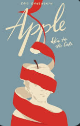

Pages Worth Turning
Online Resources
Young Adult Fiction
Scythe
Shusterman, N. (2016). Scythe. Simon & Schuster Books for Young Readers.
All My Rage
Tahir, S. (2022). All My Rage. Razorbill.
Young Adult Nonfiction

Apple: Skin to the Core
Gansworth, E. (2020). Apple: Skin to the Core: A Memoir in Words and Pictures. Levine Querido.

All Boys Aren't Blue
Johnson, G. M. (2020). All Boys Aren't Blue: A Memoir-Manifesto. Farrar, Straus and Giroux.
Mental Health Awareness
Supporting social-emotional well-being through powerful young adult memoirs. Click below to view book trailers that promote empathy, self-awareness, and resilience.